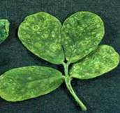
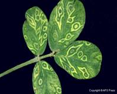
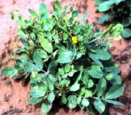
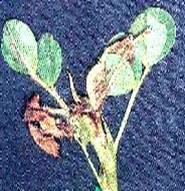

GROUNDNUT :: MAJOR DISEASE :: GROUNDNUT BUD NECROSIS DISEASE
Groundnut bud necrosis disease - Groundnut bud necrosis virus(GBNV- Tospo virus)
Symptoms
First symptoms are visible 2-6 weeks after infection as ring spots on leaves. The newly emerging leaves are small, rounded or pinched inwards and rugose with varying patterns of mottling and minute ring spots. Necrotic spots and irregularly shaped lesions develop on leaves and petioles. Stem also exhibits necrotic streaks.
|  |  |  |  |
Symptoms |
|||
Plant becomes stunted with short internodes and short auxillary shoots. Leaflets show reduction in size, distortion of the lamina, mosaic mottling and general chlorosis. In advanced conditions, the necrosis of buds occurs. Top bud is killed and necrosis spreads downwards. Drastic reduction in flowering and seeds produced are abnormally small and wrinkled with the dark black lesions on the testa.
Pathogen
It is caused by Groundnut bud necrosis virus (GBNV). The virus particles are spherical, 30 nm in diameter, enveloped, ssRNA with multipartite genome.
Disease cycle
The virus perpetuates in the weed hosts viz., Bidens pilosa, Erigon bonariensis,
Tagetes minutaand Trifolium subterraneum. The virus is transmitted by thrips viz., Thrips palmi, T. tabaciand Frankliniellasp.
Management
- Adopt plant spacing of 15x15 cm.
- Remove and destory infected plants up to 6 weeks after sowing.
- Application of Monocrotophos 500 ml/ha, 30 days after sowing either alone or in combination with AVP (Anti Viral Principle) extracted from sorghum or coconut leaves. Spray the crop with 10 per cent AVP at 500 lit/ha, ten and twenty days after sowing.